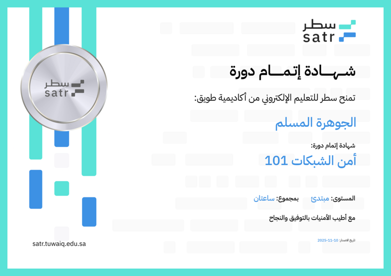
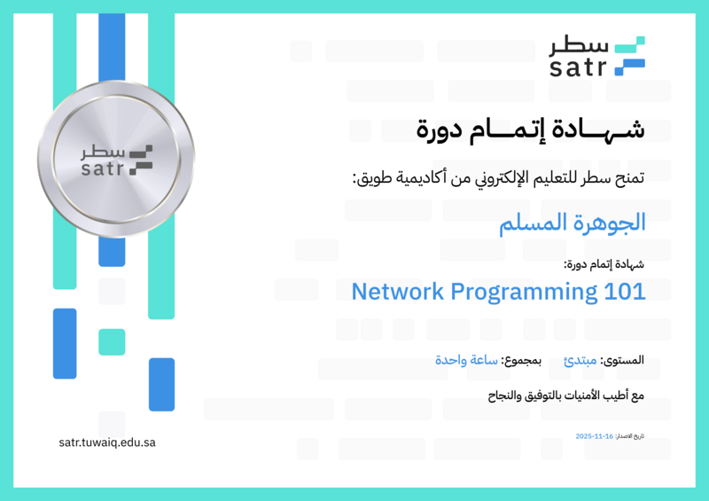
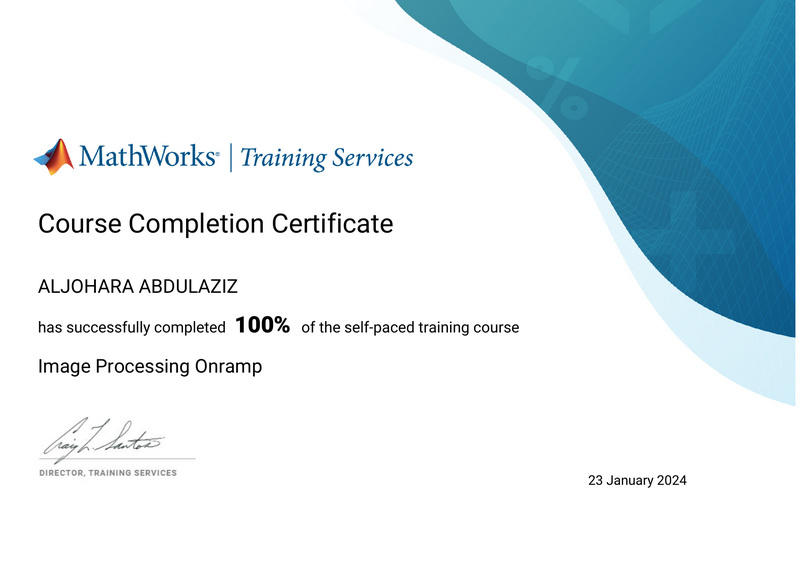
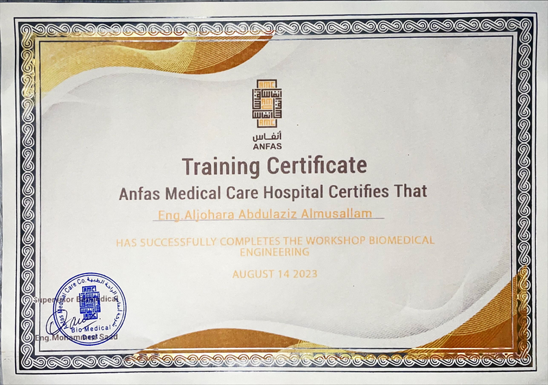
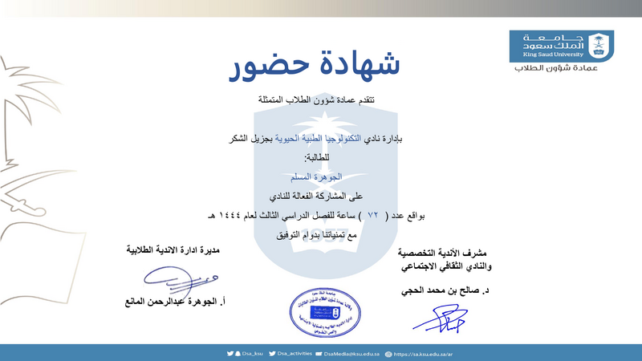
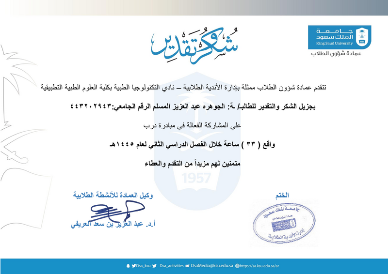
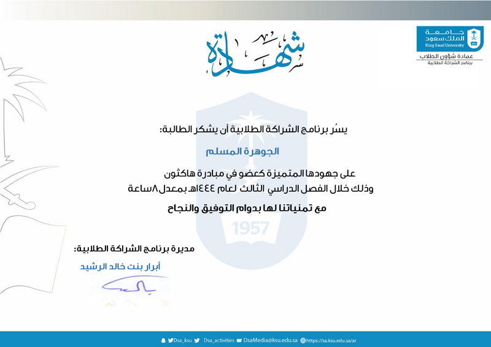

Profile
Biomedical engineering graduate with academic and practical experience in healthcare technology, medical systems, biomedical instrumentation, healthcare information systems, and healthcare innovation.
Professional experience includes a clinical internship within a tertiary healthcare environment, exposure to medical equipment management, preventive maintenance, healthcare technology systems, and participation in healthcare IT and biomedical engineering projects.
Areas of involvement span medical devices, digital health solutions, healthcare applications, clinical engineering workflows, and technology-driven solutions supporting modern healthcare environments.
Education
Bachelor of Biomedical Engineering
King Saud University (KSU)
Graduation Year: 2025
GPA: 4.82 / 5.00
Clinical Internship
King Abdulaziz Medical City – National Guard Health Affairs (2026)
Comprehensive clinical internship covering biomedical engineering operations, medical equipment management, troubleshooting, testing, maintenance, documentation, and healthcare technology systems.
Clinical & Technical Areas
- General Biomedical Workshop
- Cardiac Workshop
- Operating Rooms (OR) & Critical Care Areas
- Laboratory & Dialysis Units
- Imaging Department
- Medical Systems & Integration Department
Cardiac & Monitoring Equipment
- Patient Monitors
- VS4 Monitoring Systems
- Central Monitoring Stations
- Pacemakers
- CardioHelp System
- Intra-Aortic Balloon Pump (IABP)
Critical Care Equipment
- Mechanical Ventilators
- High-Frequency Ventilators
- Transport Ventilators
Imaging Systems
- X-Ray Systems
- CT Scanners
- MRI Systems
- Ultrasound Systems
- C-Arm Systems
- PET/CT Systems
Laboratory & Dialysis Equipment
- Dialysis Machines
- CRRT Systems
- Omnicell Systems
- Safety Cabinets
- Centrifuges
Specialized Equipment
- Incubators
- Dental Equipment
- Ophthalmology Systems
- Sleep Lab Systems
- Rehabilitation Treadmills
- Humidifiers
- Home Care Medical Equipment
Projects
Home Healthcare Application (Graduation Project)
A capstone project focused on improving access to home healthcare services through a centralized digital platform.
The application enables patients to connect with healthcare providers, compare service prices, review provider profiles, and receive location-based recommendations. The project supports healthcare accessibility, patient experience improvement, and digital transformation initiatives within the healthcare sector.
Drug Interaction Detection System
Healthcare IT project designed to improve medication safety through automated drug-drug interaction detection. The system identifies potential interactions between previously dispensed medications and newly selected drugs. Future integration with Wasfaty and dosage validation capabilities was considered.
ECG Measurement System Using Arduino
Design and implementation of an ECG signal measurement system using Arduino and biomedical sensors for real-time signal acquisition, visualization, and preliminary signal analysis.
Ambu Bag Design (3D Modeling)
Development of a 3D model of an Ambu bag with emphasis on ergonomic design, functional enhancement, and improved usability for medical applications.
Solution for Muscle Weakness in Astronauts
Conceptual solution addressing muscle atrophy in astronauts through wearable technology and rehabilitation-oriented design to preserve muscle strength during and after space missions.
Certifications & Professional Training
AI Skills 4 WomenFounderz AI & Business School — March 2026

McKinsey Forward ProgramMcKinsey.org — June 2026

Fluke Biomedical Equipment Operational TrainingAljeel Medical — 2026

Microsoft Azure AI FundamentalsELEVATE / ICAIRE — October 19, 2025
Network Programming 102Tuwaiq Academy — November 2025

Network Programming 101Tuwaiq Academy — November 2025

Network Security 101Tuwaiq Academy — November 2025

Research Bioethics Online CourseNCBE, KACST — March 10, 2025 | Valid Until March 2028

Exploring Generative AI: Unleashing the Power of Machine LearningJanuary 16, 2024

Image Processing OnrampMathWorks — January 23, 2024
SFDA Medical Device Regulations WorkshopJanuary 14, 2024

Biomedical Engineering WorkshopAnfas Medical Care Hospital — August 14, 2023
Introduction to CT-ScanNational University for Science and Technology — July 25, 2023

MATLAB OnrampMathWorks — December 4, 2022
Leadership & Volunteering

Quality & Development Committee MemberKing Saud University — 72 Volunteer Hours

Technical Committee Member – Biomedical Technology ClubDarb Initiative — 33 Volunteer Hours
Active Participation – Biomedical Technology Club27 Volunteer Hours

Design & Coordination Committee MemberBiomedical Technology Club — 5 Volunteer Hours

Hackathon Initiative MemberBiomedical Technology Club — 8 Volunteer Hours
Human Resources Team MemberKing Saud University — 8 Volunteer Hours

Student Activities Unit VolunteerKing Saud University — 10 Volunteer Hours
Event OrganizerSaudi Society for Health Promotion & Education — 25 Volunteer Hours
Total Volunteer Hours: 153+
Contact
Email: aljohara.almusallam1@gmail.com
LinkedIn: https://www.linkedin.com/in/aljohara-almusallam-491b66304